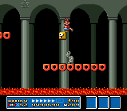

SUPER MARIO BROS. 3
Wiki
Levels
World 4
| World | Image | Overview |
|---|---|---|
| World 4-1 |
The first level of Giant Land, which introduces several large enemies. |
|
| World 4-2 |
An athletic level with large warp pipes and jumping Cheep-Cheeps. |
|
| World 4-3 |
This level takes place in an underground cavern with large gaps the player has to jump across. |
|
| World 4-  1 1 |
The first fortress level in the Giant Land. This fortress introduces Hot Foots and sliding Thwomps. |
|
| World 4-4 |
 |
An underwater level with Lakitu tossing Spiny Eggs. |
| World 4-5 |
A level that introduces Missile Bills. |
|
| World 4-6 |
This level features Magic Doors that change the size of the enemies and obstacles when the player enters one of them. |
|
| World 4- 2 |
 | The second fortress level in the Giant Land, with a secret door past the donut lifts. |
| World 4-  |
The fourth airship level of the game, with Iggy Koopa as the boss. |
|
| World 4- |
Three Sledge Brothers roam the map. All three arenas feature one Sledge Bro on a flat stretch of land with two large Cloud Blocks high above. Defeating each Sledge Bro will award the player with a Starman, Jugem's Cloud, and a P-Wing. |